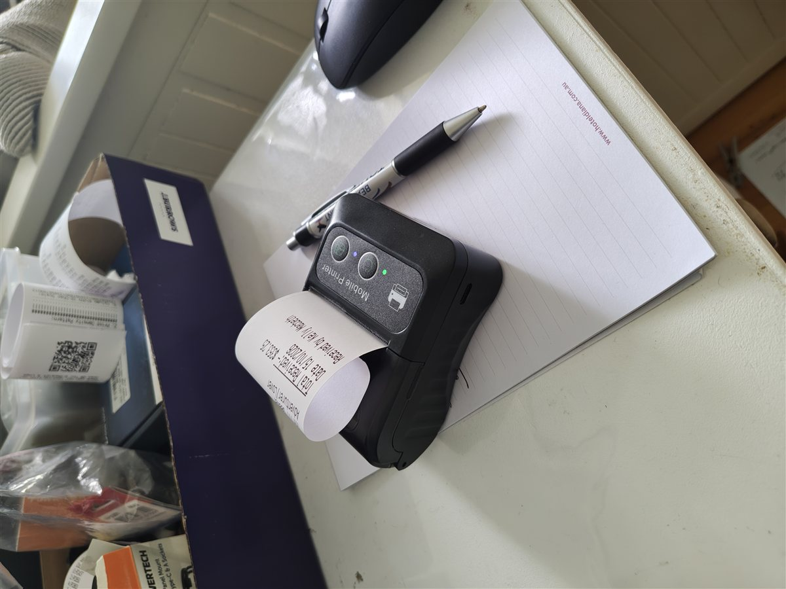
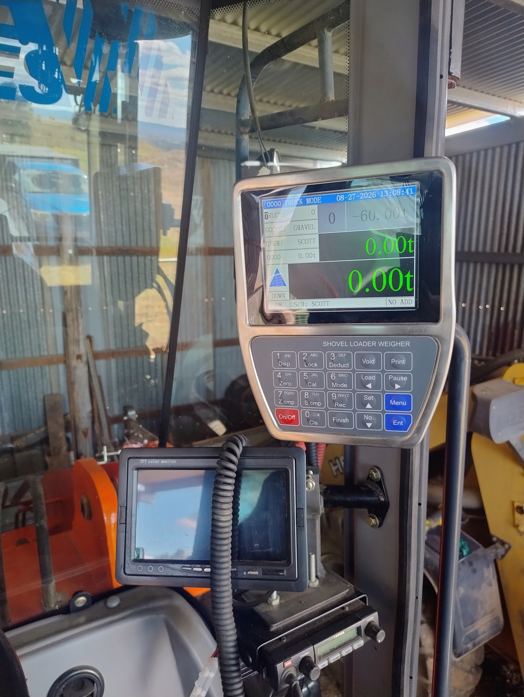

WHAT WE SUPPLY FOR YOUR LOADER:
Loader Scales with Web Monitoring Android App or Printer Options
Our scales are designed to work in third world environments with limited infrastructure and challenging conditions.
They are rugged design for harsh conditions on a daily basis, ensuring reliable performance even in ordinary environments and challenging work sites.
Android Palm tablet & Printer
Below is our portable tally roll printer for remote area backup. The indicator in the loader communicates with the Android hand held so all daily reports loads, totals etc can be transported and printed as needed or downloaded to PC for further processing.
Our apps and Web pages are included in the price of the Wheeled Loader System our Hardware consists or Bluetooth transmitter for the Loader Scale and the palm tablet and portable printer. This option is $1500.00 + GST one time payment


Large Character Display with Truck and Client ID.
Intuitive interface for the large character display, making it easy to read and operate even in challenging conditions.
Seamless integration with existing truck ID systems ensures accurate tracking and reporting. Ideal for both small and large-scale operations.
Take your Tally roll printing and tracking to the next level with our integrated system. Print out receipts and invoices on site and face to face with clients. Android system captures the action through the day, clients get receipts and take it all home in your pocket to download to PC.
Warranty 2 years included with the system.
We cover warranty for hardware and software from office . Support is provided by sending equipment cloned to your system to site from our office in Brisbane.
Our support team are regional and can provide on-site assistance as needed to ensure your loader scale system operates smoothly.
